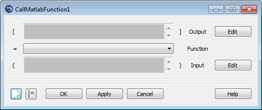

CallMatlabFunction — Call a MATLAB function
MatlabFunction()MatlabFunction(input_argument[,input_argument]...)[output_argument[,output_argument]...]=MatlabFunction[output_argument[,output_argument]...]=... MatlabFunction(input_argument[,input_argument]...)
GMAT provides a special command that allows you to call a function written in the MATLAB language or provided with the MATLAB software. In the GUI, this is the CallMatlabFunction command.
In the syntax description, MatlabFunction is a MatlabFunction resource that must be declared during initialization. Arguments can be passed into and returned from the function, though some data-type limitations apply. See Remarks for details.
When a MATLAB function is called, GMAT opens a MATLAB command-line window in the background. This functionality requires that MATLAB be properly installed and configured on your system.
See Also: MatlabFunction, MATLAB Interface
|  |
The CallMatlabFunction GUI provides two input boxes for input and output arguments and a list to select a function to call.
The Output box lists all configured output argument parameters. These must be selected by clicking Edit, which displays a parameter selection window. See the Calculation Parameters reference for details on how to select a parameter.
The Input box is identical in behavior to Output, but lists all configured input arguments to the function. Arguments must be selected by clicking Edit. The Function list displays all functions that have been declared as MatlabFunction resources in the Resources tree. Select a function from the list to call it.
When the changes are accepted, GMAT does not perform any validation of input or output arguments. This validation is performed when the mission is run, when MATLAB has been started.
The input arguments (input_argument
values in the syntax description) can be any of the following types:
resource parameter of real number type (e.g.
Spacecraft.X)
resource parameter of string type (e.g.
Spacecraft.UTCGregorian)
Array, String, or Variable resource
Array resource element
The output arguments (output_argument
values in the syntax description) can be any of the following types:
resource parameter of real number type (e.g.
Spacecraft.X)
resource parameter of string type (e.g.
Spacecraft.UTCGregorian)
Array, String, or Variable resource
Array resource element
Data type conversion is performed for the following data types when values are passed between MATLAB and GMAT. When data is passed from GMAT to MATLAB as input arguments, the following conversions occur.
| GMAT | MATLAB |
|---|---|
real number (e.g. Spacecraft.X, Variable, Array element) | double |
string (e.g.
| char array |
Array resource | double array |
When data is passed from MATLAB to GMAT as output arguments, the following conversions occur.
| MATLAB | GMAT |
|---|---|
char array | string |
double | real number |
double array | Array resource |
Call a simple built-in MATLAB function:
Create MatlabFunction sinh
Create Variable x y
BeginMissionSequence
x = 1
[y] = sinh(x)Call an external custom MATLAB function:
Create Spacecraft aSat
Create ImpulsiveBurn aBurn
Create Propagator aProp
Create MatlabFunction CalcHohmann
CalcHohmann.FunctionPath = 'C:\path\to\functions'
Create Variable a_target mu dv1 dv2
mu = 398600.4415
BeginMissionSequence
% calculate burns for circular Hohmann transfer (example)
[dv1, dv2] = CalcHohmann(aSat.SMA, a_target, mu)
% perform first maneuver
aBurn.Element1 = dv1
Maneuver aBurn(aSat)
% propagate to apoapsis
Propagate aProp(aSat) {aSat.Apoapsis}
% perform second burn
aBurn.Element1 = dv2
Maneuver aBurn(aSat)Return the MATLAB search path and working directory:
Create MatlabFunction path pwd
Create String pathStr pwdStr
Create ReportFile aReport
BeginMissionSequence
[pathStr] = path
[pwdStr] = pwd
Report aReport pathStr
Report aReport pwdStr